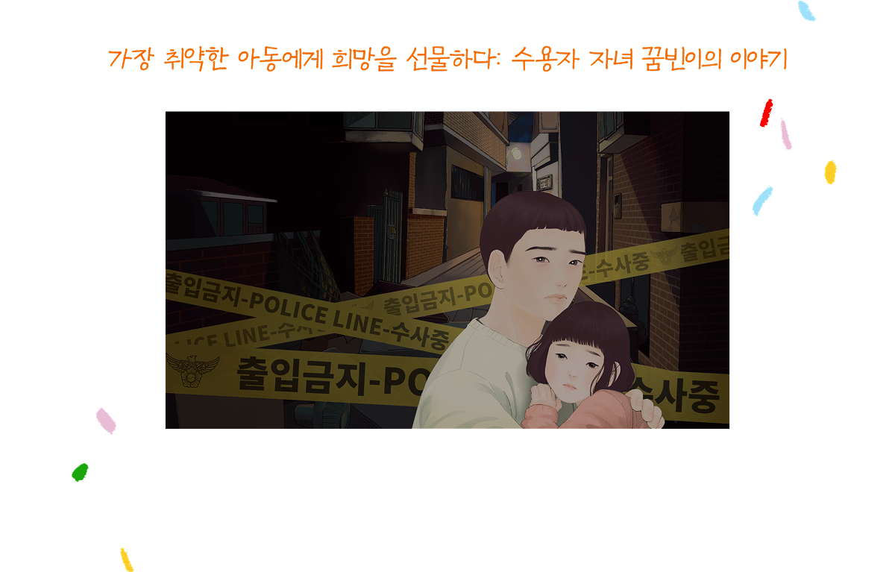
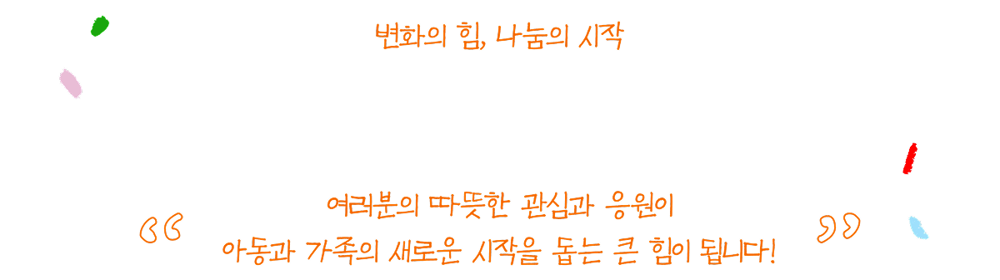
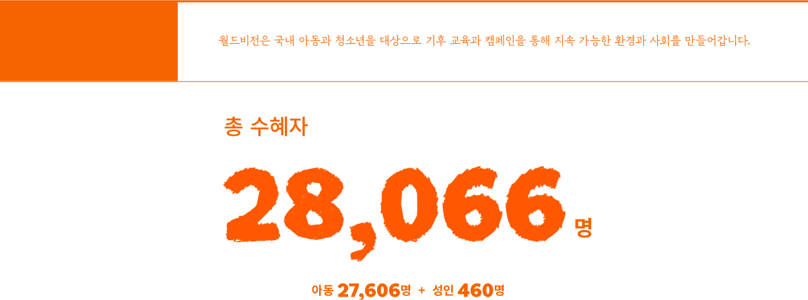
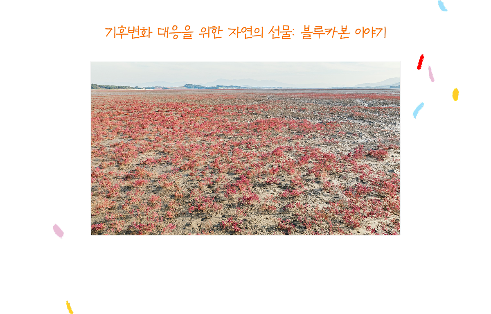
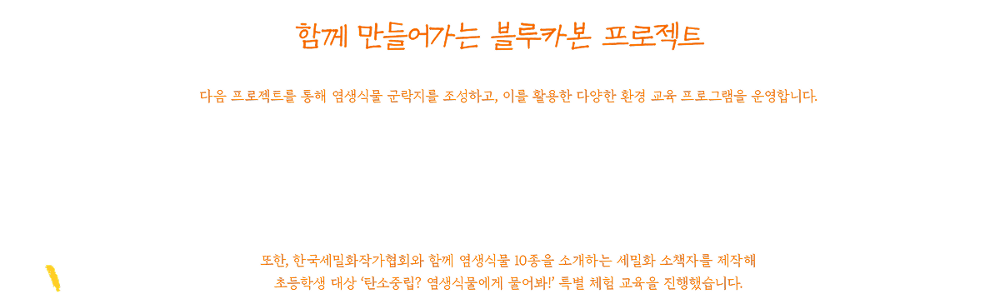
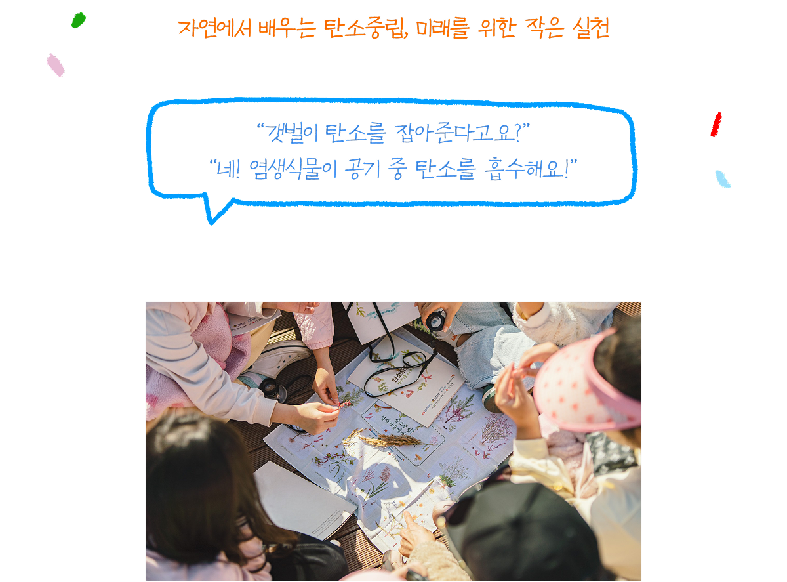
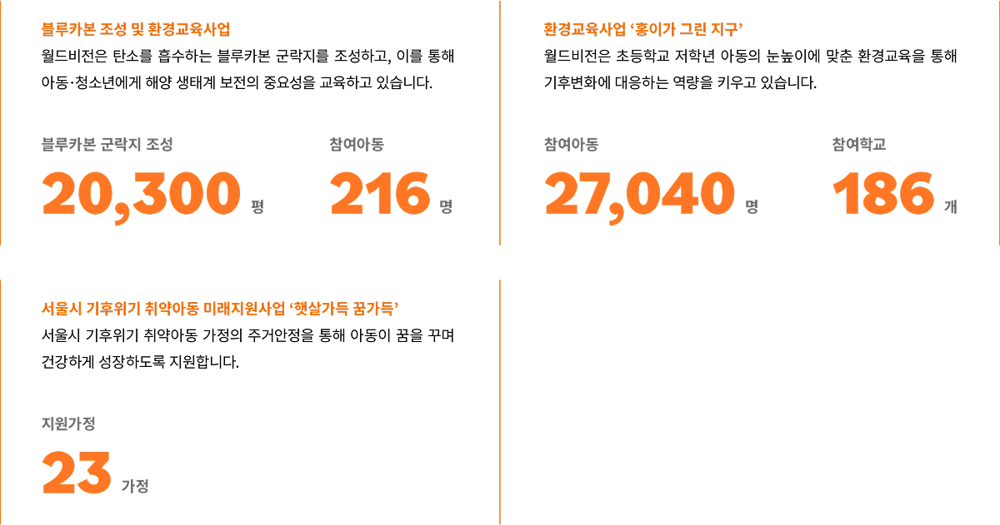
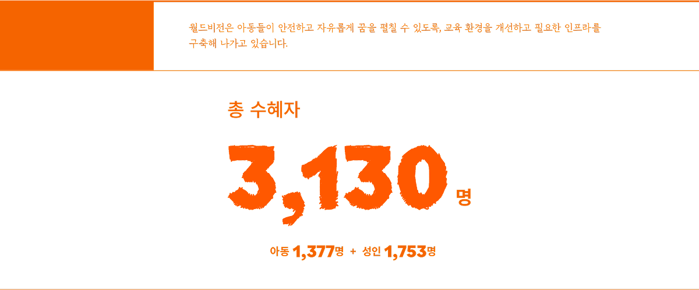
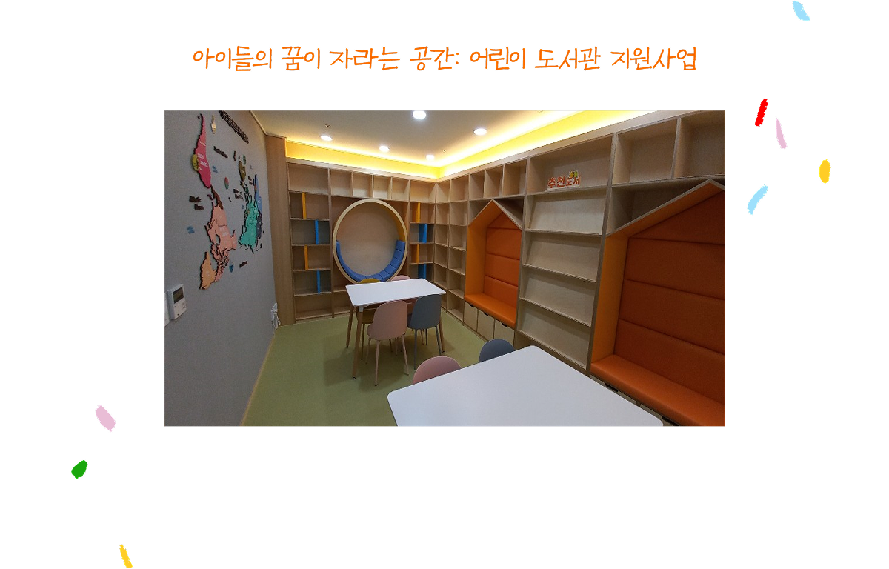
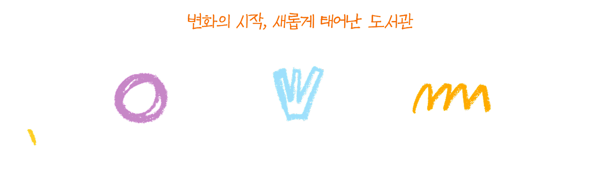

수용자 자녀 꿈빈이는 어린 시절 부모의 이혼 후 아버지와 함께 지내다, 생일을 앞두고 아버지가 수감되는 충격적인 사건을 겪었습니다.
삶의 의욕을 잃고 방황하던 꿈빈이는 오랜 시간 따로 살았던 어머니와 함께 지내게 되었지만, 갈등과 혼란 속에서 힘든 시간을 보냈습니다.
경제적으로 어려운 상황에서 월드비전의 성장지원비와 긴급지원은 꿈빈이가 삶의 기반을 다지는 데 큰 힘이 되었습니다.
또한, 가족회복 프로그램의 가족여행은 꿈빈이와 아버지의 관계를 회복하는 중요한 전환점이 되었습니다.
여행 이후, 꿈빈이는 점차 밝은 모습으로 변하여, 눈을 마주치며 웃기 시작했고, 자신의 감정을 문장으로 표현하며 마음을 열었습니다.
“제 마음을 알아주는 건 아버지밖에 없어요”라는 꿈빈이의 고백에, 아버지도 “이번 여행 덕분에 가족과 함께하는 기쁨이 살아갈 힘이 되었다”라며 새로운 희망을 품게 되었습니다.

월드비전은 가장 어려운 순간에도 아이들이 다시 일어설 수 있도록 끝까지 함께합니다.
기후변화대응


월드비전은 탄소중립 실현을 위해 서해안 블루카본 군락지를 조성하며 아이들에게 환경 보호의 중요성을 알리고 있습니다.
*블루카본이란? 염생식물(바닷가 등의 염분이 많은 토양에서 자라는 식물)과 해양 생태계가 탄소를 흡수해 기후변화에 대응하는 자연의
중요한 기능입니다.

해양경찰청, 포스코이앤씨, 한국전력공사 인천본부 등과 협력한 씨사이드파크 폐염전 부지 복원 사업
부안군 줄포만갯벌생태공원 조성 사업

이처럼, 월드비전은 아이들이 환경을 이해하고 보호하는 리더로 성장할 수 있도록
지속적인 노력을 이어가고 있습니다.

아동친화적 환경 조성


월드비전은 낡고 오래된 도서 공간을 새롭게 단장해 아이들에게 따뜻한 독서 공간을 선물합니다.
책과 함께 꿈을 키울 수 있는 환경을 만들어 아이들의 상상력과 학습의 기회를 넓혀주고 있습니다.

아늑하고 편안한 쉼터로 변신한 도서관은 아이들에게 가장 편안한 공간이 되었습니다.새롭게 채워진 다양한 도서는 아이들이 자연스럽게 독서 시간을 늘리고 책과 가까워질 수 있도록 돕습니다.조용한 학습 공간이 생기면서 집중력 향상과 자기주도 학습도 가능해졌습니다.


![자립준비청년 지원 전국 14개 자립지원 전담기관과 함께 자립준비청년을 대상으로 생계, 주거, 의료, 교육비를 지원합니다. 또한, 청년들이 주도하는 프로젝트 ‘낭만청년단’과 디지털 플랫폼을 활용한 심리·정서 지원 프로그램 ‘메타버스 코칭’을 통해 자립을 돕고 있습니다. 참여아동 5,181명
& 가족돌봄청소년 지원 가족 돌봄을 책임지는 청(소)년이 돌봄의 부담을 혼자 지지 않도록, 생애주기에 맞는 지원을 통해 건강한 일상을 누리고 미래를 준비하며 더 나은 삶을 꿈꿀 수 있도록 돕습니다. 참여아동 3,111명
& 범죄로 상처받은 아이들 지원 범죄로 상처받은 아이들(범죄 피해 청소년 및 수용자 자녀)이 무너진 일상을 회복하고 건강한 가족과 사회의 일원으로 살아갈 수 있도록, 긴급위기지원, 심리정서지원, 그리고 꿈지원을 제공합니다. 참여아동 1,686명
& 정신건강문제 취약가정자녀 지원 정신건강이 취약한 가정의 아동·청소년이 가정에서 적절한 보호를 받고, 꿈을 포기하지 않으며 건강하게 성장할 수 있도록 지원합니다. 참여아동 2,444명](images/domestic2/ParticipationText1.png)